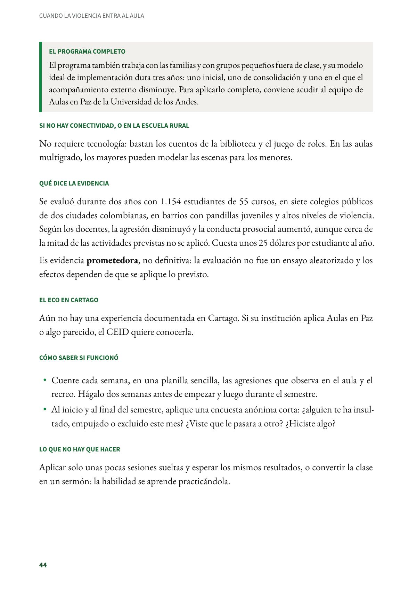
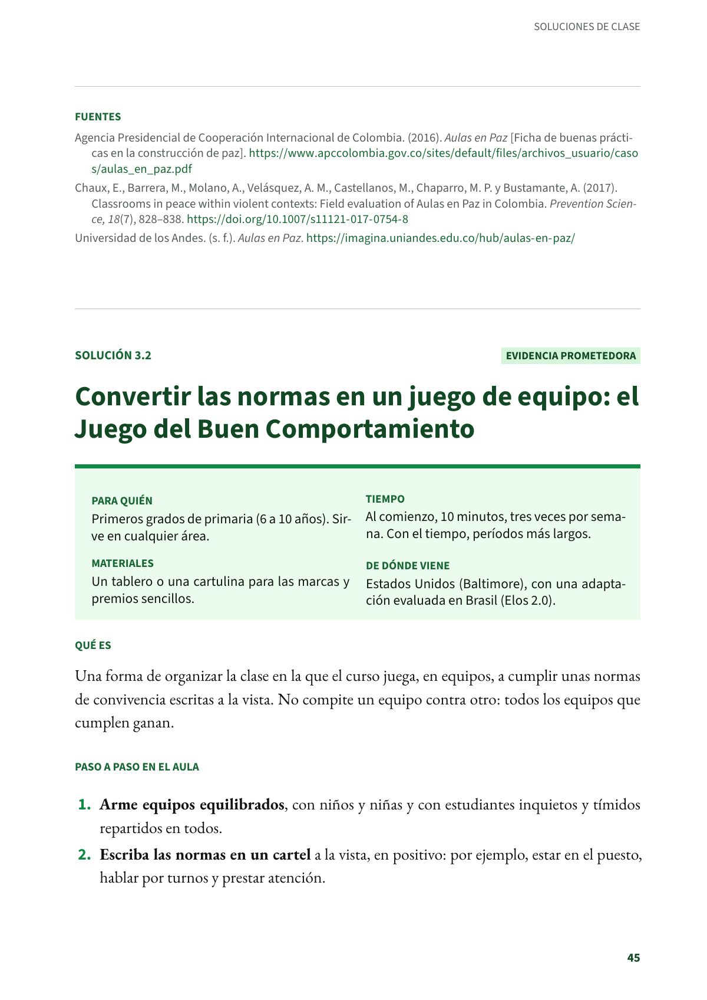

Enseñar a manejar la rabia y a resolver conflictos: Aulas en Paz
Un programa colombiano de competencias ciudadanas para primaria, con un tema por grado. Evidencia prometedora.
PDF · 3 págs. · 62 KBEn resumen
- Evidencia: prometedora.
- Para quién: Primaria, de 2.º a 5.º. Clases de ética o competencias ciudadanas y de lenguaje.
- Tiempo: 40 horas por grado en el año: 24 en ética y valores o dirección de grupo y 16 en lenguaje.
- Materiales: Literatura infantil y teatro. El programa tiene sus propios materiales.
- De dónde viene: Colombia: Universidad de los Andes (Enrique Chaux y su equipo).
Qué es
Un programa colombiano que enseña a los niños competencias ciudadanas para relacionarse sin violencia. Desarrolla habilidades emocionales (empatía y manejo de la rabia), cognitivas (toma de perspectiva, generación de opciones, consideración de consecuencias y pensamiento crítico) y comunicativas (asertividad y escucha activa). Cada grado tiene su tema: en 2.º, la agresión; en 3.º, los conflictos; en 4.º, la intimidación escolar, y en 5.º, los conflictos y la mediación.
Paso a paso en el aula, con los elementos del programa
- En la clase de ética y valores o en dirección de grupo, dedique una sesión por semana a una habilidad: primero la nombra, luego la modela y después los niños la ensayan en juegos de roles con situaciones del curso.
- En la clase de lenguaje, trabaje la misma habilidad con un cuento o una escena de teatro: ¿qué sintió el personaje?, ¿qué otra cosa pudo hacer?, ¿qué harías tú si lo vieras?
- Trabaje el tema del grado. En 4.º, por ejemplo, practique con el curso qué hacer cuando alguien presencia una intimidación: decirle a quien agrede que pare, acompañar a quien la recibe y buscar a un adulto. En 5.º, ensaye cómo mediar en un conflicto entre compañeros.
- Use los conflictos reales del recreo como material de clase: sin nombres ni culpables, se revisa qué pasó y qué alternativas había.
El programa completo
El programa también trabaja con las familias y con grupos pequeños fuera de clase, y su modelo ideal de implementación dura tres años: uno inicial, uno de consolidación y uno en el que el acompañamiento externo disminuye. Para aplicarlo completo, conviene acudir al equipo de Aulas en Paz de la Universidad de los Andes.
Si no hay conectividad, o en la escuela rural
No requiere tecnología: bastan los cuentos de la biblioteca y el juego de roles. En las aulas multigrado, los mayores pueden modelar las escenas para los menores.
Qué dice la evidencia
Se evaluó durante dos años con 1.154 estudiantes de 55 cursos, en siete colegios públicos de dos ciudades colombianas, en barrios con pandillas juveniles y altos niveles de violencia. Según los docentes, la agresión disminuyó y la conducta prosocial aumentó, aunque cerca de la mitad de las actividades previstas no se aplicó. Cuesta unos 25 dólares por estudiante al año.
Es evidencia prometedora, no definitiva: la evaluación no fue un ensayo aleatorizado y los efectos dependen de que se aplique lo previsto.
El eco en Cartago
Aún no hay una experiencia documentada en Cartago. Si su institución aplica Aulas en Paz o algo parecido, el CEID quiere conocerla.
Cómo saber si funcionó
- Cuente cada semana, en una planilla sencilla, las agresiones que observa en el aula y el recreo. Hágalo dos semanas antes de empezar y luego durante el semestre.
- Al inicio y al final del semestre, aplique una encuesta anónima corta: ¿alguien te ha insultado, empujado o excluido este mes? ¿Viste que le pasara a otro? ¿Hiciste algo?
Lo que no hay que hacer
Aplicar solo unas pocas sesiones sueltas y esperar los mismos resultados, o convertir la clase en un sermón: la habilidad se aprende practicándola.
Fuentes
Agencia Presidencial de Cooperación Internacional de Colombia. (2016). Aulas en Paz [Ficha de buenas prácticas en la construcción de paz]. apccolombia.gov.co
Chaux, E., Barrera, M., Molano, A., Velásquez, A. M., Castellanos, M., Chaparro, M. P. y Bustamante, A. (2017). Classrooms in peace within violent contexts: Field evaluation of Aulas en Paz in Colombia. Prevention Science, 18(7), 828–838. doi.org
Universidad de los Andes. (s. f.). Aulas en Paz. imagina.uniandes.edu.co
Así se ve en el libro
3 páginas

